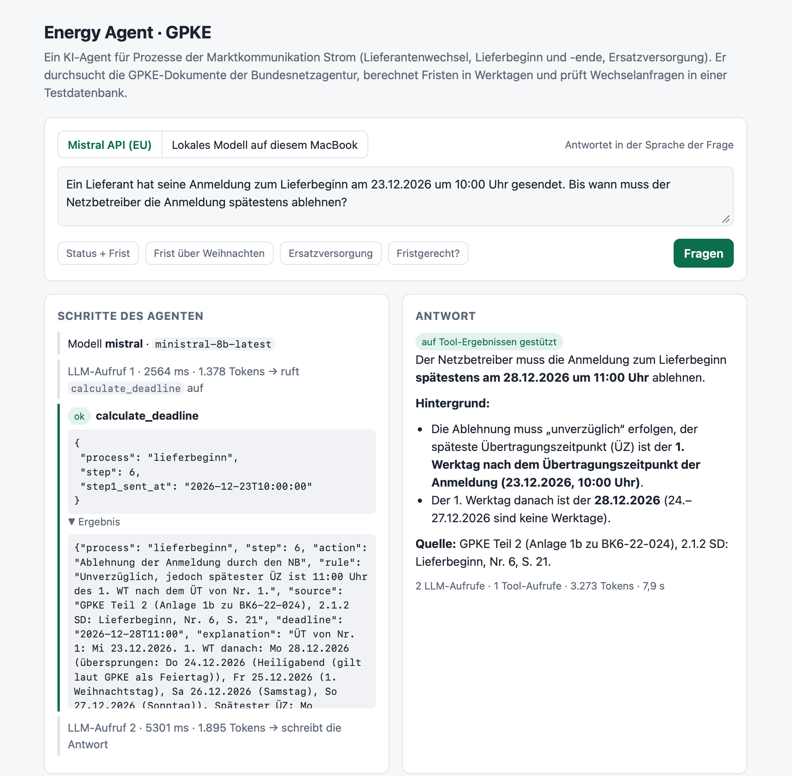

KI rechnet schlecht mit Daten
Fristen hängen an Werktagen, an Feiertagen in jedem Bundesland und sogar am 24. und 31. Dezember. Code rechnet sie nach den offiziellen Regeln; das Modell wählt nur die Regel und erklärt sie.
Nebenprojekt · KI-Agent · 2026
Wenn ein Haushalt den Stromanbieter wechselt, haben die Unternehmen 24 Stunden – und ein Regelwerk von 230 Seiten. Mein Agent beantwortet Fragen zu diesem Regelwerk mit Quellenangabe, berechnet die Fristen und prüft, wie weit ein Wechsel ist.
So funktioniert es
Der Agent liest eine Frage, wählt das passende Tool, prüft das Ergebnis und antwortet erst dann. Fakten kommen aus den Tools, nie aus dem Gedächtnis des Modells.
Ergebnisse
29 Testfragen mit bekannten Antworten, automatisch geprüft – auch darauf, ob der Agent ein Datum erfindet, das kein Tool geliefert hat.
Herausforderungen
Fristen hängen an Werktagen, an Feiertagen in jedem Bundesland und sogar am 24. und 31. Dezember. Code rechnet sie nach den offiziellen Regeln; das Modell wählt nur die Regel und erklärt sie.
29 Testfragen mit bekannten Antworten, geprüft bei jeder Änderung. Die Prüfung erkennt auch Antworten, die ein richtiges Ergebnis falsch wiedergeben, etwa mit falschem Wochentag.
Sie antworteten aus dem Gedächtnis. Eine Guardrail weist Antworten ohne Tool-Ergebnis zurück: 41% → 59% beim schwächsten Modell.
Auf dem Laptop erreicht dasselbe Modell 79% statt 86–90%. Kein Fehler, sondern eine Abwägung zwischen lokalen Daten und Qualität – mit den Zahlen lässt sie sich klar besprechen.
Noch offen
Live-Demo
Die Demo zeigt jeden Tool-Aufruf mit Argumenten und Ergebnis, bevor die Antwort kommt. Sie läuft auf meinem Laptop, ist passwortgeschützt und spricht Deutsch – wie die Sachbearbeiter, die sie nutzen würden.

Toolkit
Sie möchten es live sehen? Ich zeige Ihnen die Demo gern im Gespräch.